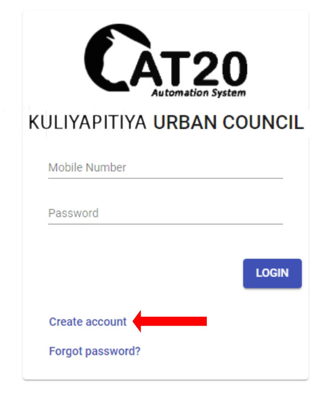
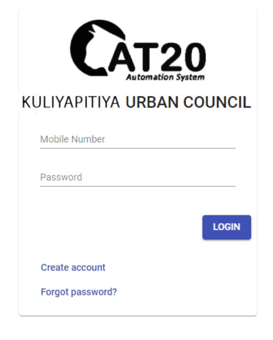
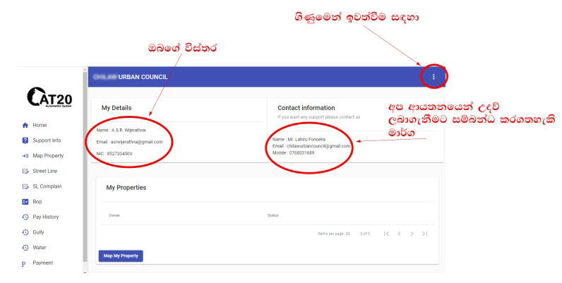

E-පුරවැසි සේවය ලබාගන්නා ආකාරය
E පුරවැසියෙක් වන ඔබ ඔබට සේවා සපයන කුලියාපිටිය නගර සභාවට ඉතාමත් සාදරයෙන් පිළිගණිමු. ඔබට අවශ්ය සියළු සේවා මාර්ගගත ආකාරයට ලබාදීම අපගේ අරමුණයි.
මාර්ගගත සේවා ලබාගන්නේ කෙසේද?
අප ඔබට සේවා සපයන ආයතනයක් වන්නෙමු. ඔබට නිවැරදි සේවාවක් සැපයීමට නම් ප්රථමයෙන් ඔබගේ අනන්යතාවය තහවුරු කරගත යුතුවේ. ප්රථමයෙන් ඔබ ඔබගේ නිවැරදි විස්තර ඇතුලත් කොට ගිණුමක් සකස් කරන්න. මෙම ගිණුම සකස්කළ යුත්තේ එක්වරක් පමණි. ඒ මගින් ඔබට සියළු සේවාවන් ලබාගත හැකිය.
ගිණුමක් සකස් කරන්නේ කෙසේද?
Online payment login මත මවුසය ක්ලික් කරන්න පසුව පෙන්වනු ලබන පරිශීලක අතුරු මුහුණතෙන් Create account මත මවුසය ක්ලික් කරන්න.

ඉන් පසුව දැක්වෙන අතුරු මුහුණතෙහි ඉල්ලා ඇති විස්තර ඇතුලත් කරන්න. මෙහිදී NIC ජාතික හැඳුනුම්පත් අංකය නිවැරදිව ලබාදිය යුතුයි. මෙහි password මුරපදය Re enter password යන ස්ථානයේ නැවතත් ඇතුලත් කල යුතුයි. නිවැරදි විස්තර ඇතුලත් කිරීමෙන් අනතුරුව Register Button එක ක්ලික් කරන්න

පසුව ඔබගේ මොබයිල් දුරකථනයට කෙටි පණිවිඩයක් SMS – KULIYAPITIYAUC යන ශීර්ෂය යටතේ පෙන්වනු ලබන අංකය පහතින් දැක්වෙන ආකාරයේ අතුරුමුහුණතෙහි verification code යන ස්ථානයේ ඇතුලත් කරන්න. එමගින් ඔබගේ ගිණුම සකස් කිරීම අවසන් වේ.

ඔබ විසින් සකස්කල ගිණුමට ඇතුලත් වීම සඳහා ජංගම දුරකථන අංකය සහ රහස් පදය ලබාදී ඇතුලත් වන්න.

ඔබගේ ගිණුමට ඇතුලත් වු පසු පහත ආකාරයට පරිශීලක අතුරු මුහුණත පෙන්වනු ලබයි.
